library(tidyverse)
library(cowplot)
library(rethinking)
library(patchwork)Week 3: Causes, Confounds, and Colliders
Elemental confounds
Workspace setup:
Last week, we started to build out multiple regression models, those that include both categorical and continuous variables as “main effects” or predictors in a model. These are simple multiple regression models, and they can be extremely useful for things like revealing spurious correlations – zero-order correlations that suggest association even when the two variables are not causally related – and important correlations that are masked by other variables.
However, you cannot interpret the coefficients in any multiple regression model without identifying the underlying causal model. This week, we’ll use Directed Acyclic Graphs (DAGs) to develop and visualize our causal models. These DAGs will then help us determine which variables, if any, to control for when trying to estimate causal pathways. Along the way, we’ll discuss some common mistakes when it comes to controls and their disasterious consequences.
This will also be a good opportunity to practice the mathematical models and code we’ve discussed before, but there will be little new code this week.

Forks
library(dagitty)
dag3.1 <- dagitty( "dag{ Z -> X; Z -> Y }" )
coordinates(dag3.1) <- list( x=c(X=-1,Z=0,Y=1) , y=c(X=0,Z=-1,Y=0) )
drawdag( dag3.1, cex = 3, lwd = 3 )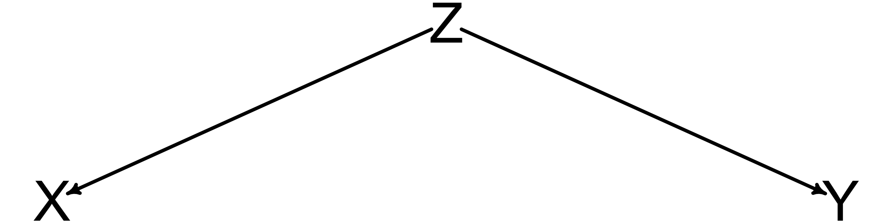
True confounds.
Not stratifying on (controlling for) Z will yield a spurious relationship between X and Y. That is, a correlation of X and Y (or regression) will be non-zero, even though there is no causal relationship from one to another.
Marriage example
data(WaffleDivorce, package = "rethinking")
d <- WaffleDivorceexercise
Create two plots, one showing the relationship between marriage rate and divorce rate and another showing the relationship between median age at marriage and divorce rate.
solution
Code
p1 <- d %>% ggplot(aes(x = Marriage, y = Divorce)) +
geom_point(color = "#1c5253") +
geom_smooth(method = "lm", color = "black") +
labs(x = "marriage rate", y = "divorce rate")
p2 <- d %>% ggplot(aes(x = MedianAgeMarriage, y = Divorce)) +
geom_point(color = "#1c5253") +
geom_smooth(method = "lm", color = "black") +
labs(x = "median age at marriage", y = "divorce rate")
(p1 | p2)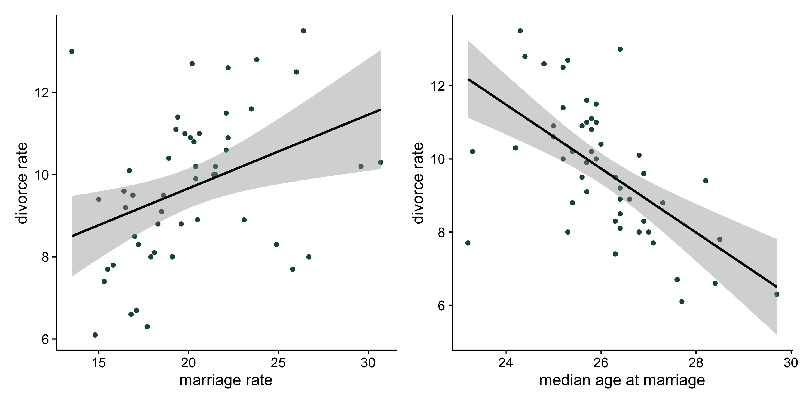
exercise
Model the relationship between Divorce Rate (D) and Marriage Rate (M). (Standardize both first.) Be sure to do the following:
Write a mathematical model expressing this relationship including priors.
Sample from your priors to evaluate them.
Calculate your posterior predictions for the relationship between D and M.
solution
\[\begin{align*} D_i &\sim \text{Normal}(\mu_i, \sigma) \\ \mu_i &= \alpha + \beta_MM_i \\ \alpha &\sim \text{Normal}(0, 0.2) \\ \beta_M &\sim \text{Normal}(0, 0.5) \\ \sigma &\sim \text{Exponential}(1) \\ \end{align*}\]
d$D <- standardize(d$Divorce)
d$M <- standardize(d$Marriage)solution
flist <- alist(
D ~ dnorm( mu, sigma),
mu <- a + bM * M,
a ~ dnorm(0, 0.2),
bM ~ dnorm(0, 0.5),
sigma ~ dexp(1)
)
m3.1 <- quap(flist = flist, data = d)solution
priors <- extract.prior(m3.1)
mu <- link( m3.1 , post=priors , data=list( M=c(-2,3) ) )
plot( D ~ M , data=d, xlab = "marriage rate", ylab = "divorce rate" )
for ( i in 1:50 ) lines( c(-2,3) , mu[i,] , col=col.alpha("#1c5253",0.4) )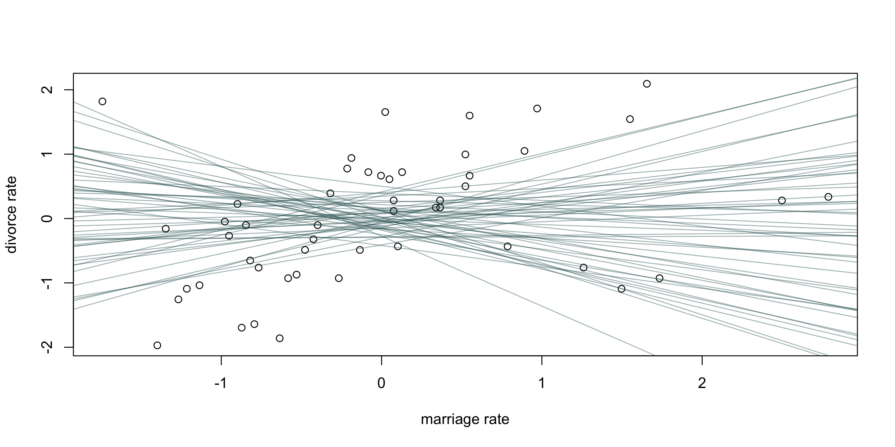
solution
precis(m3.1) mean sd 5.5% 94.5%
a 2.054143e-05 0.10824937 -0.1729829 0.1730239
bM 3.500351e-01 0.12593212 0.1487713 0.5512990
sigma 9.103005e-01 0.08987105 0.7666692 1.0539318Bonus: a plot
Code
# compute percentile interval of mean
M_seq <- seq( from=-3 , to=3.2 , length.out=30 )
mu <- link( m3.1 , data=list(M=M_seq) )
mu.mean <- apply( mu , 2, mean )
mu.PI <- apply( mu , 2 , PI )
# plot it all
plot( D ~ M , data=d , col= "#1c5253", xlab = "marriage rate", ylab = "divorce rate" )
lines( M_seq , mu.mean , lwd=2 )
shade( mu.PI , M_seq )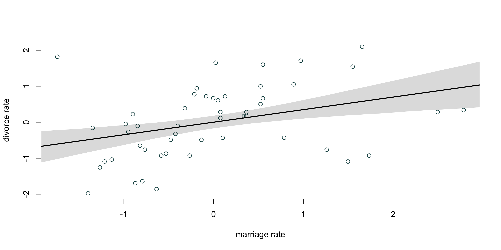
Now we’re going to incorporate state age (median age at marriage) into our model. This is the DAG proposed by RM. What does this DAG represent?
dag3.2 <- dagitty( "dag{ A -> D; A -> M; M -> D }" )
coordinates(dag3.2) <- list( x=c(A=0,D=1,M=2) , y=c(A=0,D=1,M=0) )
drawdag( dag3.2, cex = 3, lwd = 3 )
forks
DAG models help us to see conditional independencies.
- statements of which variables should be associated with each other (or not) in the data.
- statements of which variables become disassociated when we condition on some other set of variables.
impliedConditionalIndependencies( dag3.2 ) #noneimplication is that if we find any of these three variables are uncorrelated, our DAG is wrong.
How does this change with a new DAG?
dag3.3 <- dagitty( "dag{ A -> D; A -> M }" )
coordinates(dag3.3) <- list( x=c(A=0,D=1,M=2) , y=c(A=0,D=1,M=0) )
drawdag( dag3.3, cex = 3, lwd = 3 )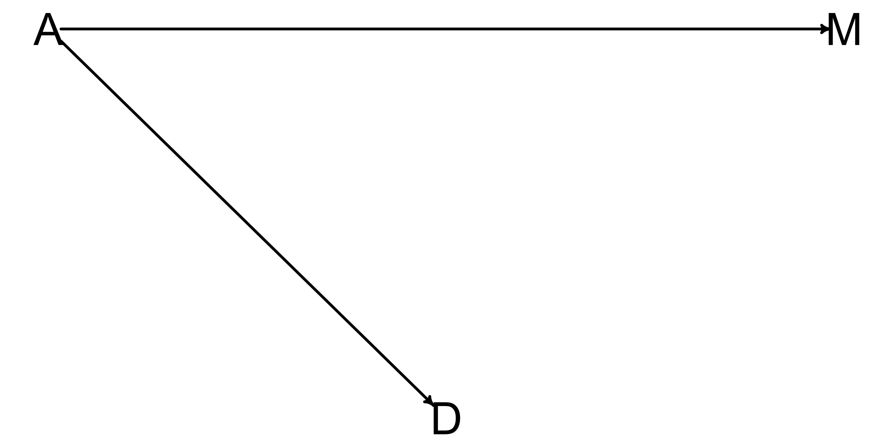
impliedConditionalIndependencies( dag3.3 ) D _||_ M | Aimplication that D and M will be independent after stratifying on A. We can test this.
\[\begin{align*} D_i &\sim \text{Normal}(\mu_i, \sigma) \\ \mu_i &= \alpha + \beta_AA_i + \beta_MM_i\\ \alpha &\sim \text{Normal}(0, 0.2) \\ \beta_A &\sim \text{Normal}(0, 0.5) \\ \beta_M &\sim \text{Normal}(0, 0.5) \\ \sigma &\sim \text{Exponential}(1) \\ \end{align*}\]
d$A <- standardize(d$MedianAgeMarriage)flist <- alist(
D ~ dnorm( mu, sigma),
mu <- a + bA * A + bM * M,
a ~ dnorm(0, 0.2),
bA ~ dnorm(0, 0.5),
bM ~ dnorm(0, 0.5),
sigma ~ dexp(1)
)
m3.2 <- quap(flist = flist, data = d)
precis(m3.2) mean sd 5.5% 94.5%
a 3.836799e-06 0.09707548 -0.1551415 0.1551492
bA -6.133942e-01 0.15098419 -0.8546961 -0.3720923
bM -6.524857e-02 0.15077339 -0.3062136 0.1757164
sigma 7.851122e-01 0.07784206 0.6607056 0.9095188plot( coeftab(m3.1,m3.2), par=c("bA","bM") )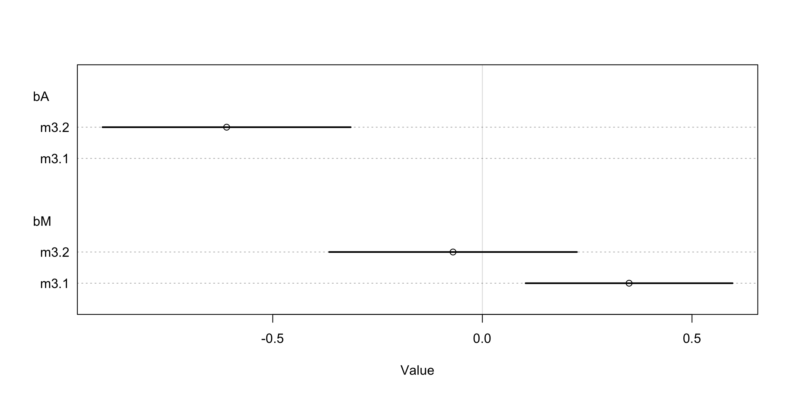
If we want to simulate the effect of manipulating marriage, we use “do calculus.” We do this by effectively “deleting” the arrows going into our manipulation variable (M).
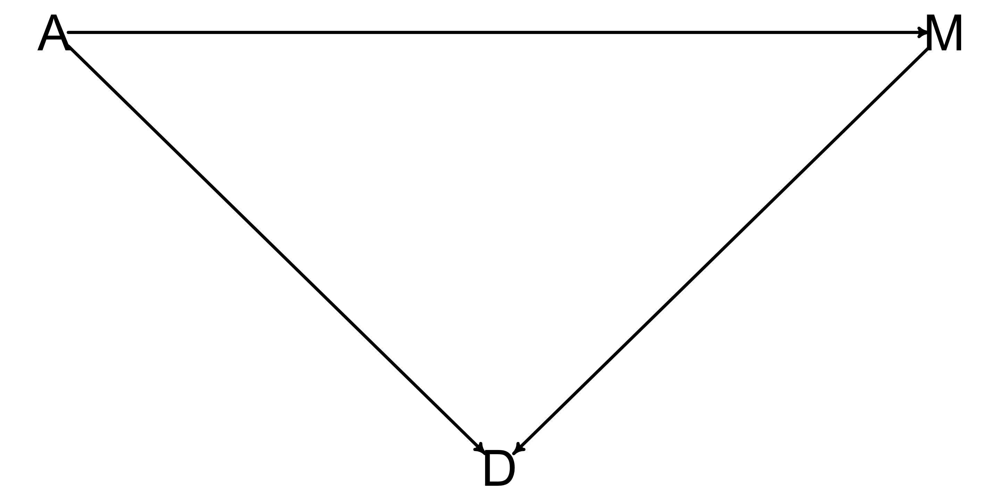
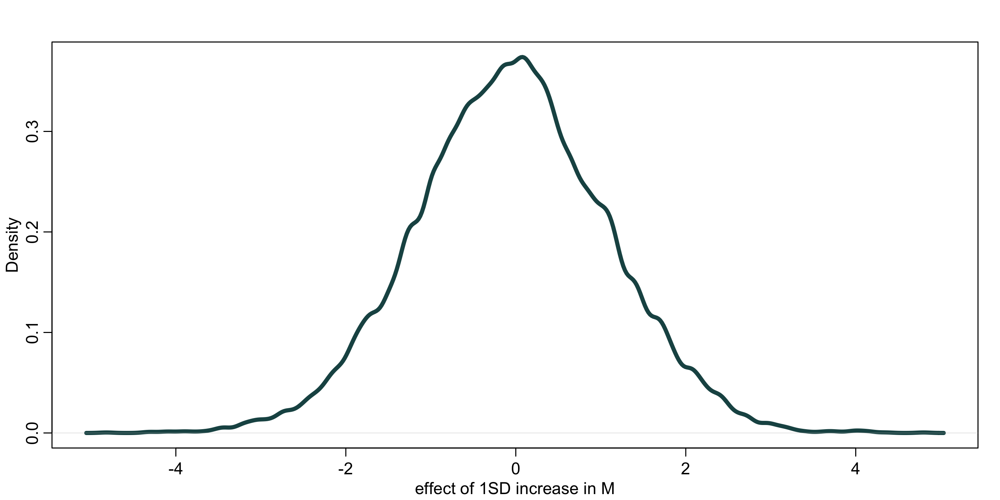
post <- extract.samples(m3.2) # get 10k samples of all parameters
n <- 1e4
As <- sample(d$A, size=n, replace=T) #sample from original data
# simulate D for M=0
DM0 <- with( post ,
rnorm(n, a + bM*0 + bA*As, sigma))
# simulate D for M=1 -- SAME A values
DM1 <- with( post ,
rnorm(n, a + bM*1 + bA*As, sigma))
#contrast
M10_con <- DM1 - DM0
dens(M10_con, lwd=4, col = "#1c5253", xlab="effect of 1SD increase in M")Pipes
A pipe in a DAG model represents a situation where a variable acts as a mediator between two other variables. In this context, the effect of one variable on another is transmitted through the mediator.
dag_pipe <- dagitty("dag{ X -> M -> Y }")
coordinates(dag_pipe) <- list(x=c(X=0, M=1, Y=2), y=c(X=0, M=1, Y=0))
drawdag(dag_pipe, cex = 3, lwd = 3)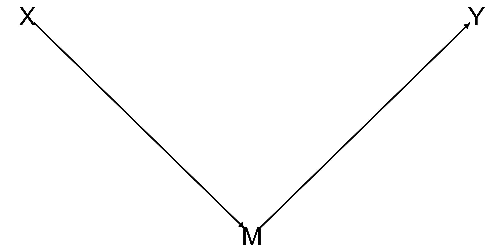
One place that pipes show up is in post-treatment bias.
Suppose you are studying plants in a greenhouse, and you want to know how effective a particular fungal treatment is. Fungus on plants tends to reduce their growth. You plant a bunch of plants, measure them, then apply one of two different treatments. After some time, you measure the plants again, and you measure the amount of fungus on the plants.
Simulate some fake plant data.
set.seed(71)
# number of plants
N <- 100
# simulate initial heights
h0 <- rnorm(N,10,2)
# assign treatments and simulate fungus and growth
treatment <- rep( 0:1 , each=N/2 )
fungus <- rbinom( N , size=1 , prob=0.5 - treatment*0.4 )
h1 <- h0 + rnorm(N, 5 - 3*fungus)
# compose a clean data frame
d <- data.frame( h0=h0 , h1=h1 , treatment=treatment , fungus=fungus )
precis(d) mean sd 5.5% 94.5% histogram
h0 9.95978 2.1011623 6.570328 13.07874 ▁▂▂▂▇▃▂▃▁▁▁▁
h1 14.39920 2.6880870 10.618002 17.93369 ▁▁▃▇▇▇▁▁
treatment 0.50000 0.5025189 0.000000 1.00000 ▇▁▁▁▁▁▁▁▁▇
fungus 0.23000 0.4229526 0.000000 1.00000 ▇▁▁▁▁▁▁▁▁▂exercise
Draw the dag that describes the relationships between these 4 variables.
What are the implied conditional independences?
solution
plant_dag <- dagitty( "dag {
H_0 -> H_1
F -> H_1
T -> F}" )
coordinates( plant_dag ) <- list( x=c(H_0=1.0,T=0,F=0.5,H_1=1),
y=c(H_0=-.5,T=0,F=0.5,H_1=0) )
drawdag( plant_dag, cex = 3, lwd = 3 )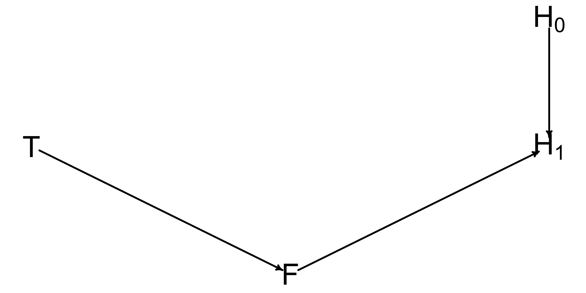
impliedConditionalIndependencies(plant_dag)F _||_ H_0
H_0 _||_ T
H_1 _||_ T | FLet’s start by just modeling growth using our two height variables.
\[\begin{align*} h_{1,i} &\sim \text{Normal}(\mu_i, \sigma) \\ \mu_i &= h_{0,i} \times p \\ p &\sim \text{Log Normal}(0, .25) \\ \sigma &\sim \text{Exponential}(1) \end{align*}\]
flist <- alist(
h1 ~ dnorm(mu, sigma),
mu <- h0*p,
p ~ dlnorm(0, .25),
sigma ~ dexp(1)
)
m3.3 <- quap(flist, d)
precis(m3.3) mean sd 5.5% 94.5%
p 1.426628 0.01759792 1.398503 1.454753
sigma 1.792063 0.12496047 1.592352 1.991774Now add treatment to this model.
\[\begin{align*} h_{1,i} &\sim \text{Normal}(\mu_i, \sigma) \\ \mu_i &= h_{0,i} \times p \\ p &= \alpha + \beta_TT_i \\ \alpha &\sim \text{Log Normal}(0, .25) \\ \beta_T &\sim \text{Normal}(0, .5) \\ \sigma &\sim \text{Exponential}(1) \end{align*}\]
flist <- alist(
h1 ~ dnorm(mu, sigma),
mu <- h0*p,
p <- a + bT * treatment,
a ~ dlnorm(0, .25),
bT ~ dnorm(0, .5),
sigma ~ dexp(1)
)
m3.4 <- quap(flist, d)
precis(m3.4) mean sd 5.5% 94.5%
a 1.38168552 0.02519767 1.34141478 1.4219563
bT 0.08366426 0.03431331 0.02882496 0.1385036
sigma 1.74629961 0.12190865 1.55146604 1.9411332exercise
Now add in both treatment and fungus to this model.
solution
\[\begin{align*} h_{1,i} &\sim \text{Normal}(\mu_i, \sigma) \\ \mu_i &= h_{0,i} \times p \\ p &= \alpha + \beta_TT_i + \beta_FF_i \\ \alpha &\sim \text{Log Normal}(0, .25) \\ \beta_T &\sim \text{Normal}(0, .5) \\ \beta_F &\sim \text{Normal}(0, .5) \\ \sigma &\sim \text{Exponential}(1) \end{align*}\]
flist <- alist(
h1 ~ dnorm(mu, sigma),
mu <- h0*p,
p <- a + bT * treatment + bF * fungus,
a ~ dlnorm(0, .25),
bT ~ dnorm(0, .5),
bF ~ dnorm(0, .5),
sigma ~ dexp(1)
)
m3.4 <- quap(flist, d)
precis(m3.4) mean sd 5.5% 94.5%
a 1.482826896 0.02452192 1.44363614 1.52201765
bT 0.001060225 0.02987668 -0.04668849 0.04880894
bF -0.267912187 0.03654981 -0.32632584 -0.20949853
sigma 1.408656542 0.09859148 1.25108831 1.56622477colliders
dag3.4 <- dagitty( "dag{ X -> Z; Y -> Z }" )
coordinates(dag3.4) <- list( x=c(X=-1,Z=0,Y=1) , y=c(X=0,Z=1,Y=0) )
drawdag( dag3.4, cex = 3, lwd = 3 )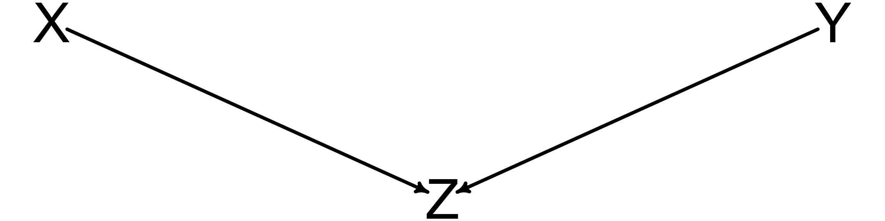
Stratifying on Z opens up the association between X and Y. We do not want to stratify on Z.
collider of false sorrow
We’ll use the rethinking package to simulate data:
- Each year, 20 people are born with uniformly distributed happiness values.
- Each year, each person ages one year. Happiness does not change.
- At age 18, individuals can become married. The odds of marriage each year are proportional to an individual’s happiness.
- Once married, an individual remains married.
- After age 65, individuals leave the sample. (They move to Spain.)
d <- sim_happiness(seed = 1990, N_years = 1000)
precis(d) mean sd 5.5% 94.5% histogram
age 3.300000e+01 18.7688832 4.000000 62.000000 ▇▇▇▇▇▇▇▇▇▇▇▇▇
married 2.946154e-01 0.4560451 0.000000 1.000000 ▇▁▁▁▁▁▁▁▁▃
happiness 6.832142e-19 1.2144211 -1.789474 1.789474 ▇▅▇▅▅▇▅▇Code
d %>%
mutate(married = factor(married, labels = c("unmarried", "married"))) %>%
ggplot(aes( x = age, y = happiness)) +
geom_point( aes( color = married), size = 3) +
scale_color_manual("",
values = c("unmarried" = "lightgrey",
"married" = "#1c5253")) +
theme(legend.position = "top")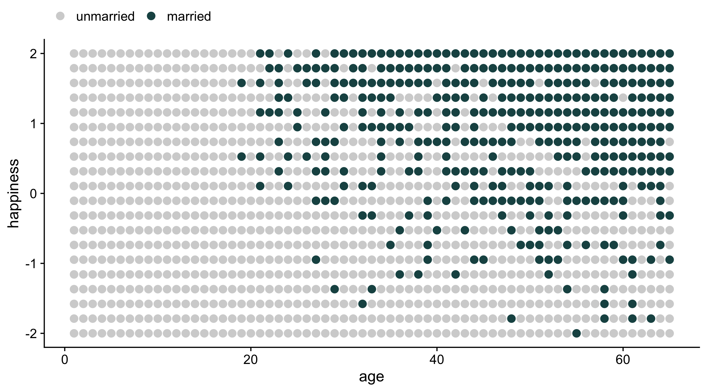
exercise
Filter out people who are younger than 18. Then fit two models:
- a model in which happiness is influenced by both marriage and age.
- a model in which happiness is influenced only by age.
(You may want to center or standardize age in some way.)
solution
d2 <- d[d$age >= 18, ]
d2$A <- standardize(d2$age)
d2$mid <- d2$married + 1
precis(d2) mean sd 5.5% 94.5% histogram
age 4.150000e+01 13.8606201 20.000000 63.000000 ▃▇▇▇▇▇▇▇▇▇
married 3.989583e-01 0.4899394 0.000000 1.000000 ▇▁▁▁▁▁▁▁▁▅
happiness 9.251859e-19 1.2145867 -1.789474 1.789474 ▇▅▇▅▅▇▅▇
A -6.476301e-18 1.0000000 -1.551157 1.551157 ▃▇▇▇▇▇▇▃
mid 1.398958e+00 0.4899394 1.000000 2.000000 ▇▁▁▁▁▁▁▁▁▅solution
flist <- alist(
happiness ~ dnorm( mu, sigma ),
mu <- a[mid] + bA*A,
a[mid] ~ dnorm( 0, 0.5),
bA ~ dnorm( 0, 0.25),
sigma ~ dexp(1)
)
m3.5 <- quap(flist, d2)
precis(m3.5, depth=2) mean sd 5.5% 94.5%
a[1] -0.5905624 0.04197727 -0.6576502 -0.5234746
a[2] 0.8866633 0.05191218 0.8036976 0.9696290
bA -0.2136768 0.03329633 -0.2668908 -0.1604629
sigma 0.9928218 0.02264183 0.9566358 1.0290078solution
flist <- alist(
happiness ~ dnorm( mu, sigma ),
mu <- a + bA*A,
a ~ dnorm( 0, 0.5),
bA ~ dnorm( 0, 0.25),
sigma ~ dexp(1)
)
m3.6 <- quap(flist, d2)
precis(m3.6, depth=2) mean sd 5.5% 94.5%
a 7.215763e-07 0.03903552 -0.06238558 0.06238703
bA -1.864706e-07 0.03870314 -0.06185527 0.06185490
sigma 1.213174e+00 0.02766004 1.16896820 1.25738038testing DAG assumptions
Causal DAGs make strong assumptions about unobserved confounders, but analyzing them can still provide valuable insights about where our models might be wrong through testing implied relationships.
Conditional independencies are key testable implications of a DAG, representing pairs of variables that should show no association after controlling for specific sets of other variables.
We can identify conditional independencies using the same path analysis techniques used for finding backdoor paths - examining all paths between two variables and determining if there exists a conditioning set that blocks all paths.
While manually deriving conditional independencies in large graphs is complex due to the many variable pairs and paths to consider, computational tools can efficiently perform these calculations.